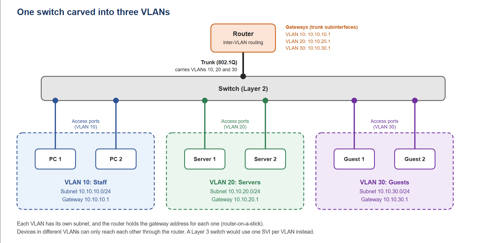
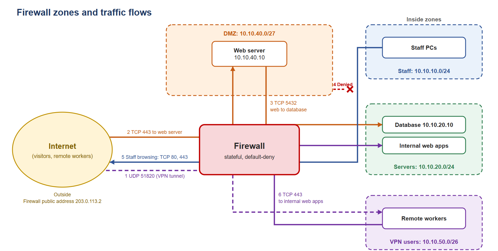

Knowledge portfolio
Networking Fundamentals from an infrastructure perspective
LAN, WAN, VLANs, subnetting and firewalls: a knowledge portfolio
This project explains how core networking building blocks work and how they fit together. It shows the understanding through explanation, worked subnetting problems, firewall rule design and fault diagnosis, with diagrams drawn for the project.
Sections
1About this projectPurpose, scope, how it was learned, and key terms2LAN vs WANOwnership, scale and devices, and where the OSI model fits3VLANs vs subnetsLayer 2 vs Layer 3, why they are paired, and inter-VLAN routing4SubnettingBinary, CIDR, host counts, VLSM, worked problems and an addressing plan5FirewallsStateless vs stateful, core concepts, a rule table and rule-order effects6Troubleshooting case studiesFour fault scenarios with symptoms, diagnosis, cause and fix7Self-testTen questions with model answers8ReflectionMistakes made and what to explore next9ReferencesSources
Figures

Editable draw.io source


Editable draw.io source


Editable draw.io source
All IP addresses, hostnames and organisations used in examples are fictional, and the scenarios are written for learning purposes.